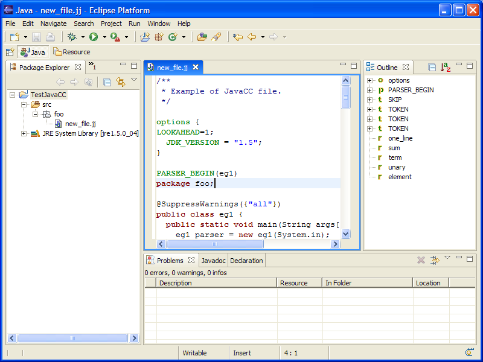
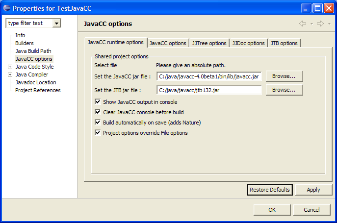
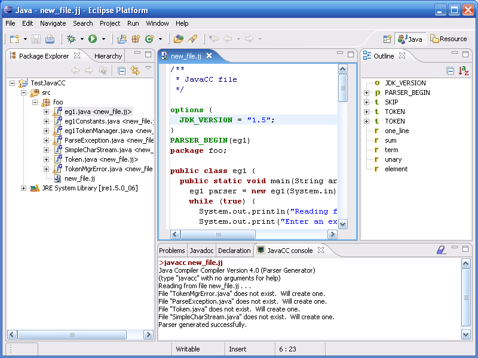
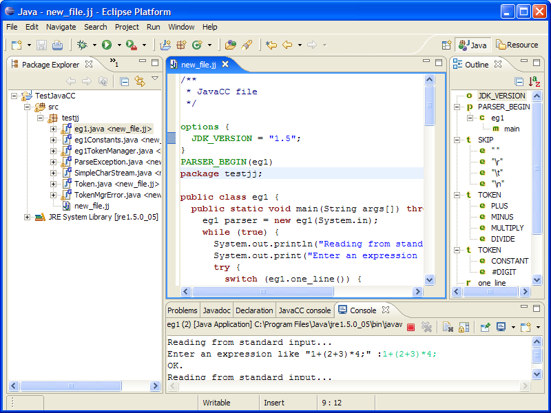
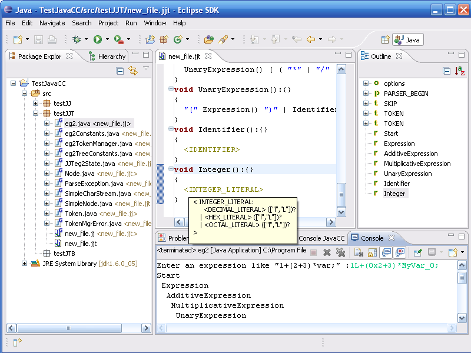
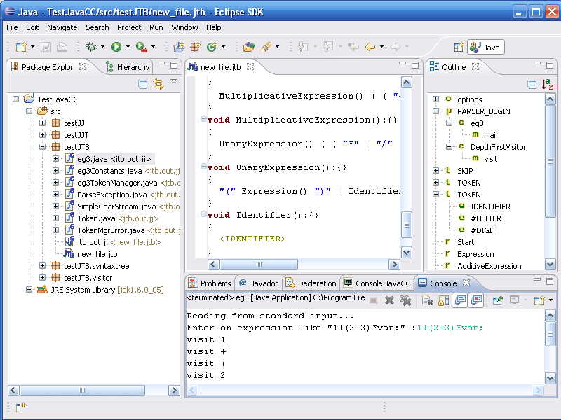

JavaCC Eclipse Plug-in for Eclipse 3.1 - 3.2
Last update 12 March 2006
JavaCC plug-in is designed to help development of JavaCC applications.
License : GPL / Cecill
You can download the last version on sourceforge : sourceforge site
Or use this site as an update site in Eclipse : http://eclipse-javacc.sourceforge.net/
To install just unzip in C:/eclipse. The sources are with the plugin.
See readme_developer.txt if you want to hack the sources.
This plug-in provides :
- Editor
- Outline
- Format (still to improve)
- JavaCC JJTree JJDoc compilation, (see https://javacc.dev.java.net/)
- JTB compilation, (You must provide your version of JTB see http://compilers.cs.ucla.edu/jtb/)
- JavaCC, JJTree, JJDoc, JTB options
- Problems reporting
- Console for JavaCC outputs with hyperlinks to Errors and Warnings
- Decoration of generated files
- Navigation into rules definitions (open declaration)
- Support Eclipse 3.1, Java 1.5, JavaCC4.0, JTB 132
- Matching bracket highlight
- Keyboard shortcuts : Comment lines Ctrl+/, Open declaration Ctrl+clic, Format Ctrl+Shift+F
- JavaCC is launched in the same directory as the grammar files (to facilitate package handling)
- More help is available with the plug-in via Eclipse menu Help / Help Contents.
New in 1.4 : update site, automatic format, self-contained javacc.jar, exclude a jj file from build
Quick Start
1) Create a new JavaCC file :
Menu File / New / Other...
Select Wizard JavaCC / JavaCC Template file
Note that :
1 - templates are ready for Java 1.5 (you'll have to set Eclipse preference compiler
compliance level to 5.0)
2 - we use package "foo"
(you'll have to create the package before using the wizard or move the .jj file after creation)
3 - we use annotation @SuppressWarnings({"all"}) to get rid of Eclipse Warnings
on generated files.

2) Set Properties for the project :
Select the Java Project "TestJavaCC"
and right click Properties
Indicate the path to javacc.jar. (which is in the "bin/lib/"
directory of your JavaCC distribution)
Here I use JavaCC version 4.0 (the plug-in works also with JavaCC 2.1, 3.0, 3.1, 3.2).

3) Compile new_file.jj
If you checked "Build automatically on save"
the files should have been already generated.
If not, you can right click on the file in the Package Explorer (or Navigator) and select
"Compile with JavaCC".
Note that :
- the generated files are decorated with a "G"
and a "<from.jj>" to indicate the
.jj file they come from,
- there may be warnings from the Java
Compiler (Eclipse doesn't like JavaCC generated code),
- JavaCC console opens automatically.

4) Run the example :
Select "TestJavaCC" and menu "Run"-> "Run as..." -> "Java
application"
Choose "eg1" for the main type. You can now test your JavaCC application :

You can do the same with the template for JJTree :

and also with the template for JTB:
